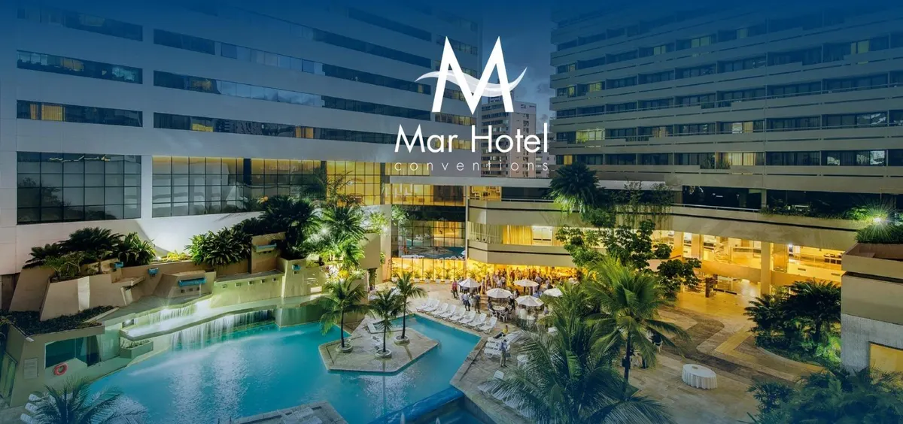
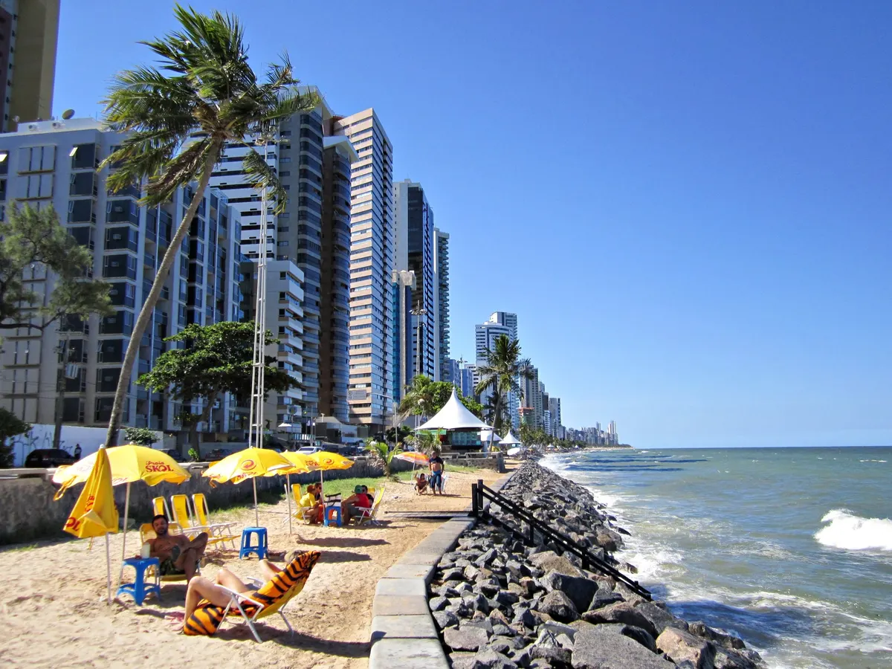

Mar Hotel, Boa Viagem
O SBSeg 2027 acontece no Mar Hotel, no bairro de Boa Viagem, na zona sul do Recife, a poucas quadras da praia urbana de mesmo nome e perto do aeroporto internacional.
Endereço: Rua Barão de Souza Leão, 451, Boa Viagem, Recife (PE), CEP 51030-300. Ver no mapa.


Como chegar
- Avião: o Aeroporto Internacional do Recife/Guararapes, Gilberto Freyre (REC), fica a cerca de 2 km do hotel, com voos diretos das principais capitais do país.
- Metrô: a estação Aeroporto, da Linha Sul do Metrô do Recife, liga o aeroporto ao centro da cidade.
- Táxi e aplicativos: disponíveis no aeroporto e em toda a cidade; o trajeto até o hotel é curto.
Hospedagem
As tarifas especiais para participantes, no Mar Hotel e em hotéis próximos, e as instruções de reserva serão divulgadas pela comissão organizadora (a definir).
Recife e arredores
Entre uma sessão e outra, vale conhecer o Recife Antigo, o Marco Zero, a Rua do Bom Jesus, o Paço do Frevo e a vizinha Olinda, com seu centro histórico tombado como Patrimônio Mundial pela UNESCO. Veja mais na seção Recife da página inicial.